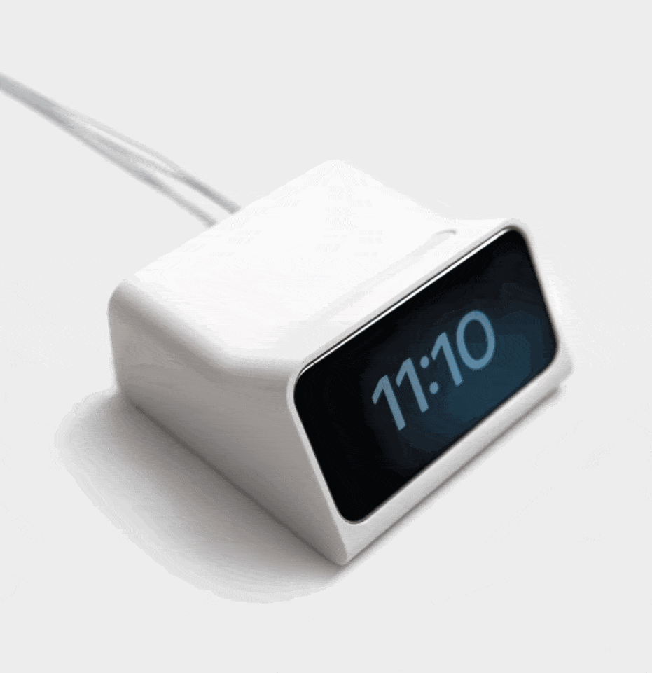

Super
Fullstack Product Development


I need a project


Fullstack Developer

Super Fullstack Product Developer
Any sufficiently advanced technology is indistinguishable from magic- Arthur C. Clarke 1973
Electricity IS magic- Drew Alexander 2025



$9.582
for one board not including shipping


Many days later


Time to finish this
ENGEL E-Speed 500 Thin Wall Injection Moulding Machine



- Online shopping - Receiving packages every couple of days - Routing traces - Watching the 3D printer work - Making things - Understanding things - Being a wizard - Getting to push cool buttons on the oscilloscope - Burning yourself with the soldering iron - Inhaling potentially dangerous fumes - Touching grass - Seeing small things under the microscope - Feeling of accomplishment and self-actualization - AliExpress - Feeling like you're not spending money because each component is only like a dollar - Seeing your code run in the real world finally - Learning how microcontrollers work finally - realising how little you know about all of these different domains - Building drones - Having friendly chats with the PCB quality assurance technician in china - Building useful tech - Building not useful tech
cont...